Lunatic電通生もっちゃんの部屋
STEP 2-2 PuTTYでWebブラウザに学内専用サイトを閲覧する設定をする
まず、PuTTYのインストールを行います。https://www.putty.org/にアクセスします。
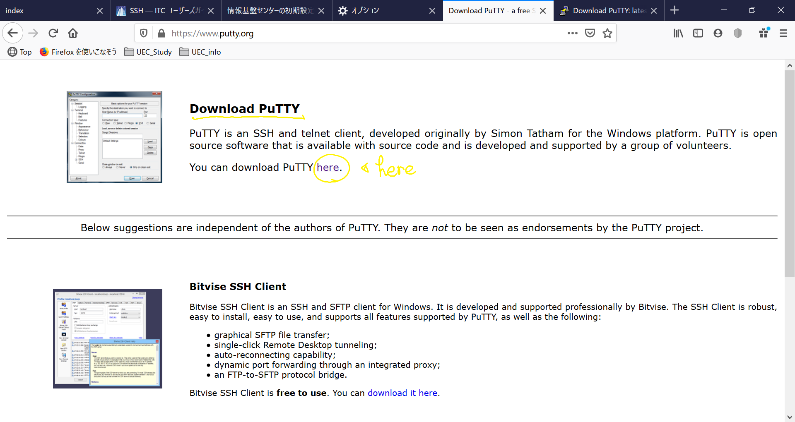黄色〇の"here"をクリック
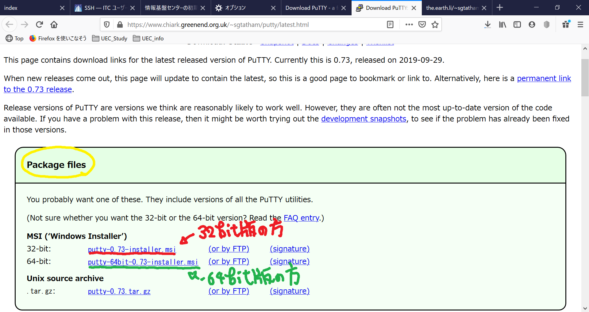自分のパソコンのバージョンに合わせて「保存」してください。（ダウンロードに時間がかかります）もし、自分のパソコンのバージョンがわからない場合、ここを確認してください。
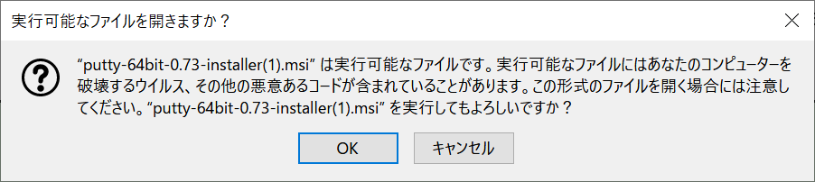実行しようとすると、なにやら不穏な文字が。リンク先からインストールしてくださった方は大丈夫ですので「OK」を選択。以下、特にこだわりがない方は、どんどん進みましょう。（Installのボタンを押すと、セキュリティ画面がでますが「はい」を選択）
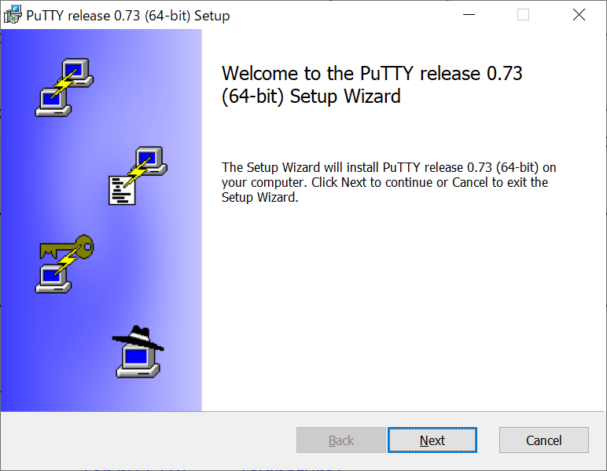 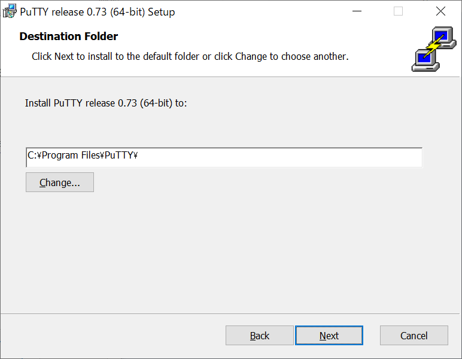 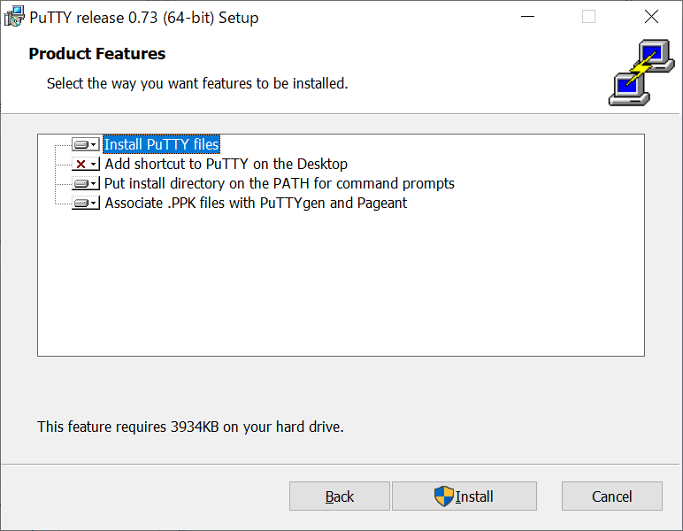 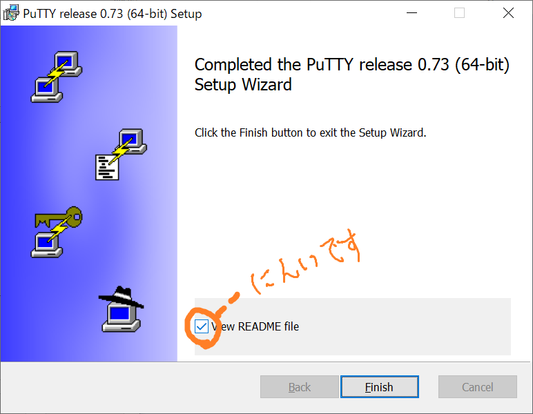README fileはお好みで開いてください。英語に自信のある方は私に和訳をください（嘘です）。ということで、インストールは終了です。デスクトップ画面にアイコンがあります。（無い場合は、「スタートボタン」から「PuTTY」と検索してください。）
次にPuTTYの設定をして「学内」Webを閲覧できるようにします。毎度設定が必要です（たぶん）ので面倒くさいですが、頑張りましょう。
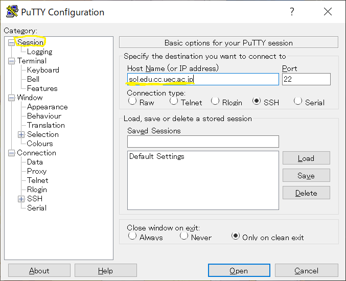
起動したら、「Category」から「Session」を選択、「Host Name」のところに「sol.edu.cc.uec.ac.jp」を入力してください。
次に、「Category」の欄を「Connection -> SSH の"+" -> Tunnels」の順にクリックしてください。
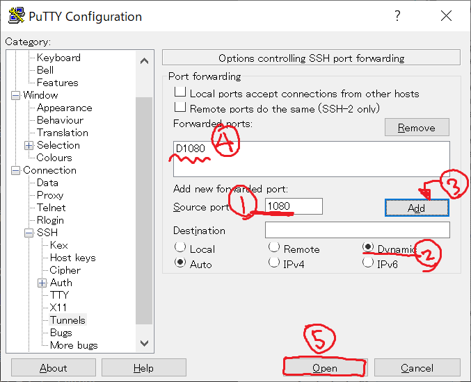画像の番号に従ってください。
- 1,「Source port」に「1080」と入力
- 2,下にある「Dynamic」を選択
- 3,「Source port」の横の「Add」を選択
- 4,上の大きい四角に「D1080」と表示されれば成功
最後に「Open」を選択すると、別のウィンドウが開きます。
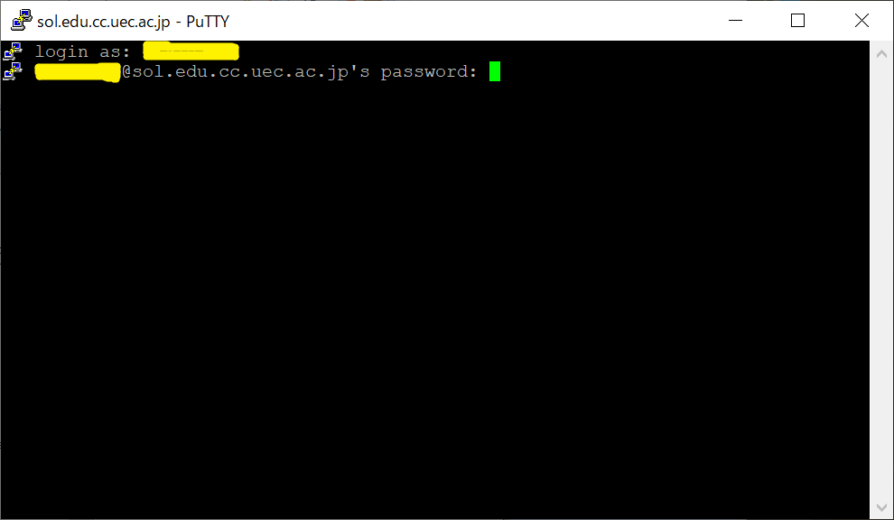「Login as:」の所には、自分の「UECアカウント（アルファベット＋7桁）」を入力して「Enter」をおしてください。
「Password」の所には「パスワード（変更していないしとは初期パスワード）」を入力してください。この時に画面には表示されません。終わったら「Enter」を押してください。
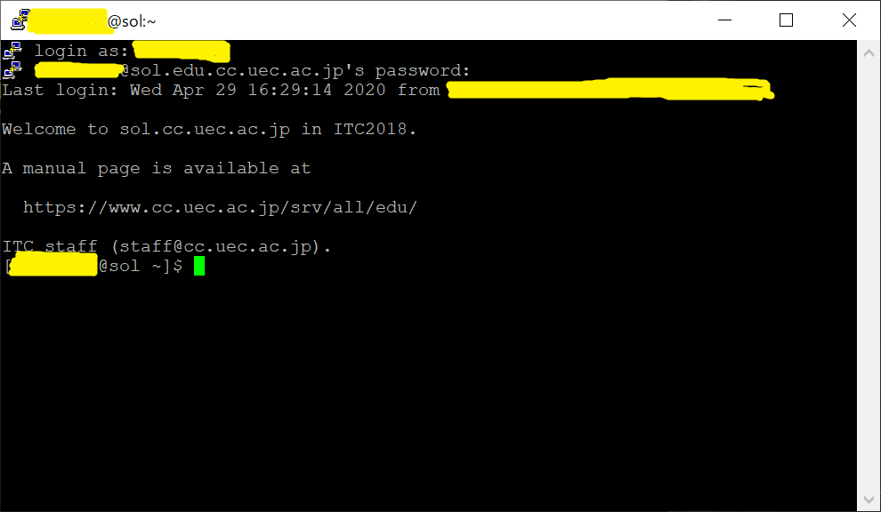このような画面が出れば成功です。この画面が開いている間有効なので、閉じないでください。
最後にブラウザの設定です。
Step 1でインストールした「Firefox」を立ち上げます。
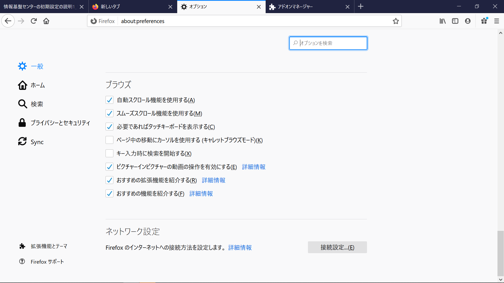「右上の三 ⇒ オプション ⇒ 一般」を選択し、一番下にある「接続設定」をクリックします。
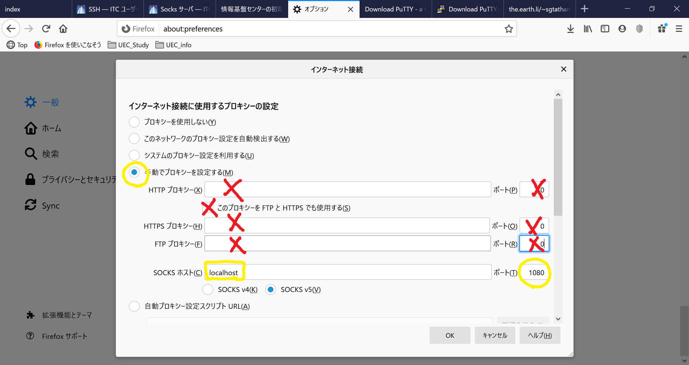上の画像の黄色の印を手がかりに入力をお願いします。
- 「手動でプロキシを設定する」にチェック
- 赤×部分は「空白」にしてください（ポートは「0」でOKです）
- 「SOCKS ホスト」欄に「
localhost」と入力 - その隣のポート欄に「1080」と入力
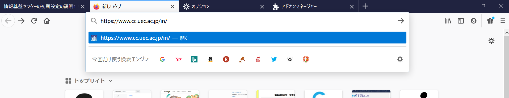
そして、https://www.cc.uec.ac.jp/in/にアクセスしてください。
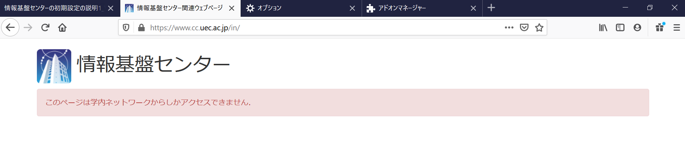上のような画面が出たら成功です。
なお、SSHを使用しない場合は、「システムのプロキシー設定を使用する」にもどしておきましょう。
Next -> STEP 3 UEC アカウントの初期パスワードを変更する